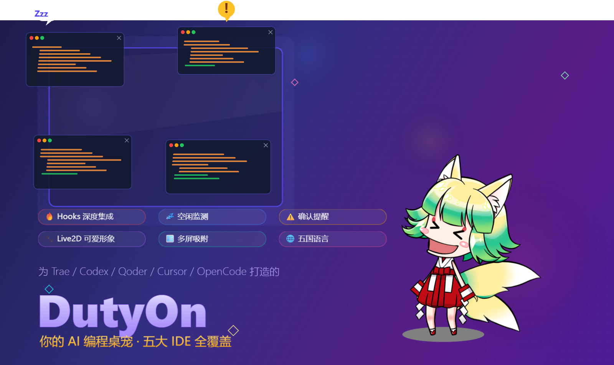
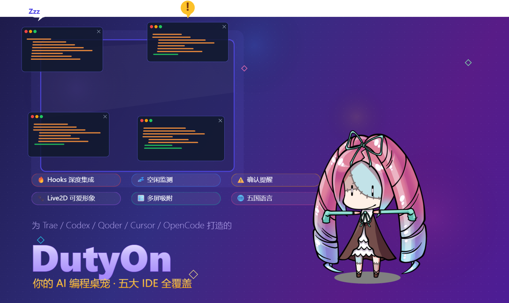
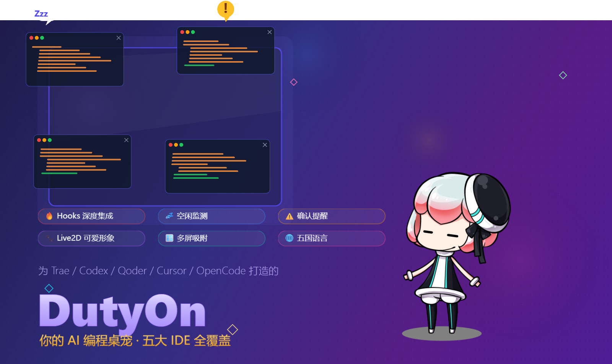
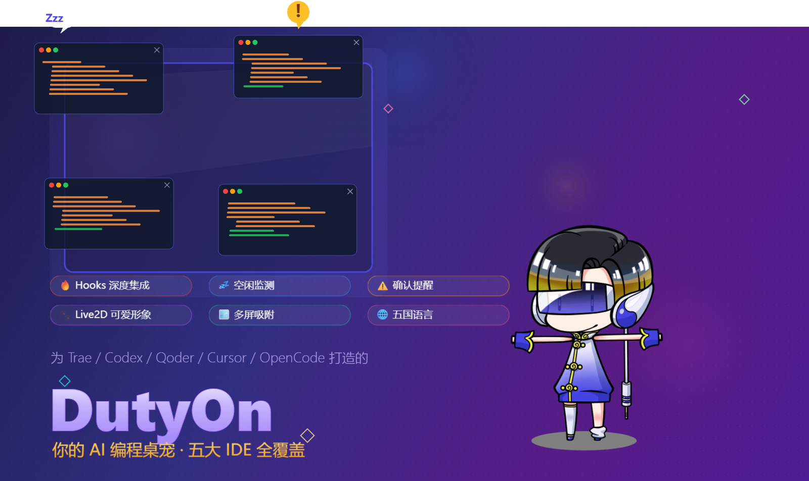
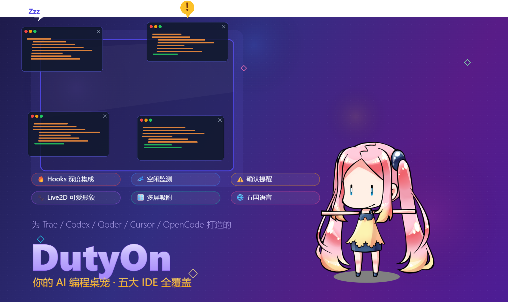

一个表情，读懂所有会话
聚合优先级：提醒 > 忙碌 > 睡觉。桌面、硬件屏、官网演示用的是同一套状态语言。
💤 睡觉
所有工具都闲着。她也闭眼打盹，头顶飘 ZZZ——世界安静。
⚡ 忙碌
有 AI 任务正在跑。她睁眼专注工作——别催，在干了在干了。
🔔 提醒
有 agent 卡在等你确认。值班牌整块亮起珊瑚红、屏幕边缘呼吸发光——就等你点一下。
六大工具全覆盖
以 Trae 为核心，每个工具都有原生 Hook 集成，事件级实时通知，不是轮询猜测。
原生 Hook 集成，自动识别新旧版窗口标题与多根工作区后缀，简中开箱即用。
~/.qoder/settings.json 合并写入，PostToolUse / PermissionRequest 事件。
~/.cursor/hooks.json 扁平格式，事件名注入 -HookEvent 参数。
$CODEX_HOME/hooks.json，PermissionRequest 待确认提醒，/hooks 信任后生效。
~/.config/opencode/plugins/ 事件总线，子会话与 permission.asked / question.asked 确认跟踪。
~/.claude/settings.json 合并写入（尊重 CLAUDE_CONFIG_DIR），14 个事件含子代理与 StopFailure；Esc 中断由约一分钟后的空闲通知兜底。
两种形态，一份代码
桌面精灵与硬件陪伴屏共用同一套 C++ 核心、角色与配置（~/.dutyon/）。
🖥 桌面精灵（Windows）
GLFW + OpenGL + Dear ImGui · 透明无边框悬浮窗
- Live2D / GIF 角色：Cubism 4 模型 21 个内置动作，任意 GIF / PNG / JPG / WebP / MP4 / WebM 也能做专属桌宠
- 项目状态栏：每个项目一行，工具徽章区分来源，点名字直接跳到对应 IDE 窗口
- 真·点击穿透：光标只有落在角色和菜单上才可点，其余直达下层窗口
- 迷你模式 / Hi-DPI / 8 语言 / 开机自启 / 托盘控制
- 全新统一视觉：琥珀主题色菜单与状态灯，和硬件屏、官网同一套语言；登录 / 配对 / 更新弹窗全部重写，危险操作两次点击确认
📟 硬件陪伴屏（ARM Linux）
DRM/GBM 直渲 GLES3 · 无 X11 · 480×800 竖屏 / 800×480 横屏
- 界面全面重设计：SDF 抗锯齿圆角与光晕、角色身后舞台光、一排"值班牌"任务卡、五种状态灯动画，待确认时整屏珊瑚红边缘呼吸光
- Wi-Fi 配网：无可用网络时开热点 DutyOn-XXXX，手机连上后 captive portal 选网
- 六位配对码：PC 右键桌宠 → 设备 → 配对，输入 3+3 分组配对码即连
- 角色 / 模型 / 声音自动同步，PC 不在时自动进入相框模式
- HDMI 声音提醒：任务开始 / 结束 / 待确认各有提示音，可按状态自定义





内置角色随时可换；自定义角色三状态动画支持云端管理（见下）。参考硬件：Orange Pi Zero 2W（H616）+ Debian 13 + HDMI 屏。
官网与云空间
dutyon.megrezsoft.com —— 安装包下载、OTA 自动升级、账号与私有内容管理。桌宠每分钟与云端双向对账一次。
☁️ 按角色管理的云空间
网页上直接新建 / 改名 / 删除角色，为空闲、忙碌、待确认三种状态各配一段动画和一个声音，可预览、试听、下载；Live2D 模型按文件夹整体上传，桌宠一分钟内自动跟上。每个账号 500 MiB，内容只有自己可见。
🔁 双向同步，不再单向覆盖
设置带版本号（rev / If-Match）做三方比较：本机与云端都改过时提示冲突，而不是互相覆盖；文件删除双向传播，本机副本先进 cloud-trash 回收站；正在使用的角色文件有引用保护，云端异常清空不会误删本机。
🎬 GIF 画质升级
缩小时改用 CPU 面积平均重采样，细节不再糊成锯齿；透明像素预乘 alpha 处理，彻底修掉缩小后的绿边 / 白边。官网角色配图由同一套渲染离屏生成。
🛠 开发者工具链
设备 UI 可在 Windows 上离屏出图（device/tools/ui-preview），不必每次烧到硬件上看；gif-matte 抠图工具链、官网配图脚本（prep-web-art.ps1）一并开源。后端 / 桥接 / 服务端 / 云同步端到端测试齐全。
✨ 重新生成：一张图 + 一段录音，做出整个角色
功能预览 · 后台接入中网页云空间已上线完整流程原型（演示数据，不会修改角色）：上传一张角色图，AI 看图写动作描述，每种状态生成 3 个备选动画并自动去背景、首尾衔接、AI 质检；再上传 10–30 秒录音克隆音色，带着情绪说出三种状态的台词。方案详见 generation-design.md。
角色形象
上传一张干净背景的角色全身图，默认取当前"忙碌中"动画第一帧。
动作描述
AI 看图后为三种状态各写一段动作，可直接改字或让 AI 重写某一段。
生成动画
每种状态 3 个备选：去背景、首尾衔接、压缩 GIF、AI 质检打分，满意的设为主动画。
声音
克隆你授权的声音，按台词 + 情绪 + 强度合成，选中即绑定到状态。
为什么选 Duty On？
轻量、原生、实时、中国优先——还多一块屏和一朵云。
原生 C++ 单进程，实测 ~116MB
一个 dutyon-pet.exe 内嵌 HTTP 服务、状态机、IDE 扫描与指标采样，任务管理器里只有一个进程，不带浏览器内核。
| 版本 | 进程 | 内存合计 |
|---|---|---|
| 1.x（WebView） | 主进程 + 6 个 WebView2 | ~465 MB |
| 2.0（原生 C++） | 仅 dutyon-pet.exe | ~116 MB |
为中国用户量身定制
Trae CN 优先适配：自动识别 " - Trae CN" 与 " - TraeCode CN" 窗口标题，剥离多根工作区后缀（工作区 / Workspace / ワークスペース / 작업 영역）；8 种语言原生支持，简中开箱即用；官网与下载主站部署在国内可直连。
Hook 实时驱动，非轮询
通过各工具原生 Hook 机制接收事件级实时通知（SessionStart / UserPromptSubmit / PreToolUse / Stop / Notification…），AI 一动，桌宠秒响应。Claude Code 的子代理、压缩与失败事件同样跟踪。
Windows 原生，不只 Mac
大多数同类桌宠仅支持 macOS。Duty On 原生支持 Windows：Win32 点击穿透、注册表开机自启、NSIS 安装包，还能交叉编译出 ARM Linux 硬件屏固件。
Live2D 精美渲染 + GIF 自定义
Cubism 4 高清 Live2D 角色，2x 超采样渲染；任意 GIF / PNG / MP4 也能创建专属桌宠，三状态分别上传动画。新版缩小重采样 + 预乘 alpha，小尺寸下依旧干净锐利。
离开座位也能感知进度
硬件陪伴屏把状态演进一块小屏：舞台光、值班牌、状态灯，待确认时珊瑚红边缘光一眼可见；配网、配对、同步全自动，PC 不在时变成相框。
一眼，而不是十一眼
多工具状态监控该有的样子
聚合状态
提醒 > 忙碌 > 睡觉，一个表情读懂所有会话的整体状态。
项目状态栏
每个项目独立列出，T/Q/C/X/O/A 徽章区分六种工具，点名字跳到对应窗口。
真·点击穿透
透明无边框悬浮窗，只有角色和菜单可点，其余操作直达下层窗口。
迷你模式
一键缩成 130×210 的角落小伙伴，随时切回完整尺寸。
自定义 GIF 角色
三状态分别上传动画，随时替换；云端网页也能直接管理。
Live2D 换皮
任意 Cubism 4 模型丢进 ~/.dutyon/live2d/ 即出现在菜单，自动备份到云端。
8 种语言
简中/繁中/英/日/韩/法/德/西，自动跟随系统语言。
状态音效
每个角色每种状态可绑定自定义声音，桌面与硬件屏都生效。
使用指南
三分钟上手，关键在第 3 步：一定要安装 Hook 集成
启动 Duty On
开始菜单或桌面快捷方式启动，角色出现在桌面上，默认浮在所有窗口顶层。右键她可以换形象、切迷你模式、调整位置、登录云账号。
安装 Hook 集成（必做 ⚠️）
右键角色 → 安装 Hook 集成。一键写入 Trae / Qoder / Cursor / Codex / OpenCode / Claude Code 六个工具的 hook 配置（只合并自己的条目，其余设置原样保留），没有这一步宠物收不到任何 AI 状态。弹窗里会逐项列出每个工具的接入情况。
重启工具 / 开始新会话
重启正在运行的 IDE 或开始新的 AI 会话让 hook 生效。Codex CLI 需在 TUI 中输入 /hooks 信任配置；Claude Code 已在运行的会话重启后才会读取新 hook。
看状态
给 AI 发一条消息：她进入忙碌 ⚡；干完回到睡觉 💤；卡在等你确认时提醒 🔔。项目状态栏里能看到每个项目的实时状态，点击直达窗口。
可选：云空间与硬件屏
在官网注册账号（与桌宠内云账号通用），网页上按角色管理动画和声音，桌宠每分钟自动双向同步。有硬件屏的话：设备上电 → 手机连 DutyOn-XXXX 热点配网 → 屏幕显示六位配对码 → PC 右键桌宠 → 设备 → 配对。
工作原理
工具 Hook 事件 → 本地 HTTP → 状态机 → Live2D / GIF 动画 → 硬件屏与云端
┌──────────────────────────────────────────────────────┐
│ dutyon-pet.exe（原生 C++ 单进程，桌面与设备共用核心） │
│ ┌────────────────────────────┬─────────────────────┐ │
│ │ 桌面: GLFW + OpenGL + ImGui│ 设备: DRM/GBM GLES3 │ │
│ │ Live2D / GIF · 状态 💤⚡🔔 │ 舞台光 · 值班牌 │ │
│ ├────────────────────────────┴─────────────────────┤ │
│ │ 内嵌后端: 状态机 · HTTP 服务 · 工具扫描 + Hooks │ │
│ └──────────────┬──────────────────┬────────────────┘ │
└─────────────────┼──────────────────┼──────────────────┘
│ /hook (本机) │ /api/status 轮询 (Wi-Fi)
┌────┬─────┬───┴──┬─────┬────┬─────┐ ┌──────────┐
│Trae│Qoder│Cursor│Codex│ OC │Claude│ │ 📟 硬件屏 │
└────┴─────┴──────┴─────┴────┴─────┘ └──────────┘
│ 每分钟双向对账（rev / If-Match）
┌─────────┴──────────┐
│ ☁ dutyon.megrezsoft.com │ 下载 · OTA · 账号 · 云空间
└────────────────────┘
关键事件：SessionStart（上线）· UserPromptSubmit / PreToolUse / PostToolUse（忙碌）· Notification / PermissionRequest（提醒）· Stop / StopFailure（回合结束）· SessionEnd（移除）。子代理事件独立跟踪，全部完成才回到空闲。
从源码构建
C++17 + CMake，没有 npm、没有打包器。桌面与硬件屏共用 device/ 目录。
# 放置路径见 device/README.md）
git clone -b v2.0-dev https://github.com/marine841023/duty-on.git
cd duty-on/device
cmake -B build -DCMAKE_BUILD_TYPE=Release
cmake --build build --config Release --target dutyon-pet
# NSIS 安装包 / 分发 ZIP / 更新包：
powershell -File ../tools/build-package.ps1
cmake -G Ninja -S device -B device/build-cross ^
-DCMAKE_TOOLCHAIN_FILE=device/cmake/aarch64-toolchain.cmake ^
-DCMAKE_BUILD_TYPE=Release -DCPR_ENABLE_SSL=OFF
cmake --build device/build-cross -j
# 设备 UI 离屏预览（Windows，无需烧录）：
bash device/tools/ui-preview/run.sh
技术栈：C++17 · GLFW · OpenGL · Dear ImGui (FreeType) · DRM/GBM + GLES3 · Live2D Cubism Native SDK · cpp-httplib · nlohmann/json · cpr · Go 云服务（Docker）。测试：device/tests（后端 / 云同步端到端）、hooks/tests（桥接）、server（Go 单测）。